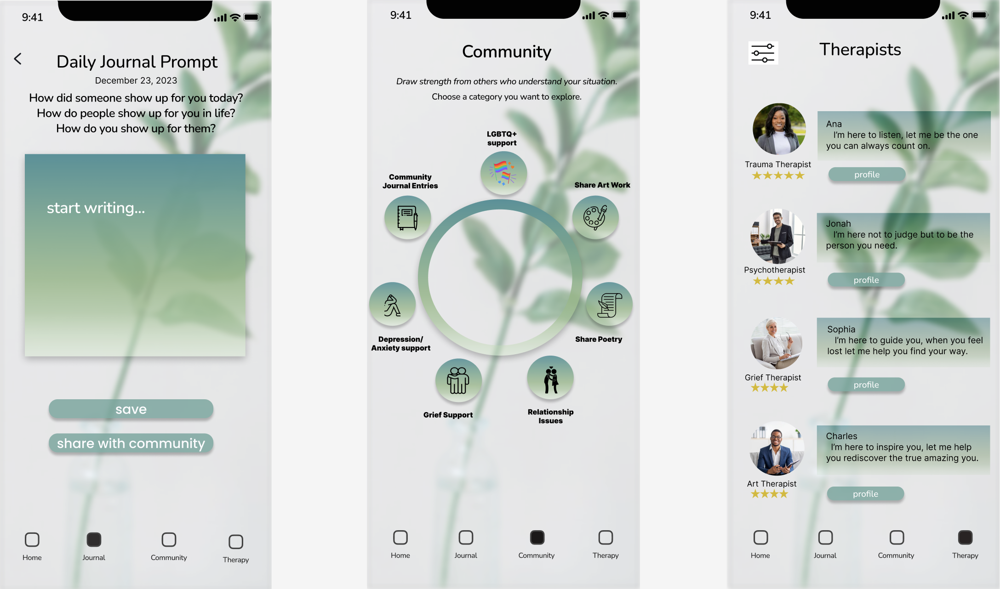
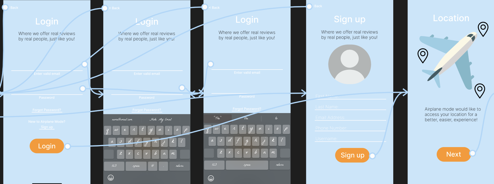

My UX Skills

UI Design
Using my UI design skills, I make visually pleasing and high quality user interfaces that enhance the users experience.

Usability Testing
With many different testing methods, I evaluate user interactions with my projects to identify pain points and improve the overall experience.

Prototyping
I utilize prototyping tools to quickly iterate and visualize design concepts, allowing for feedback-driven refinement.